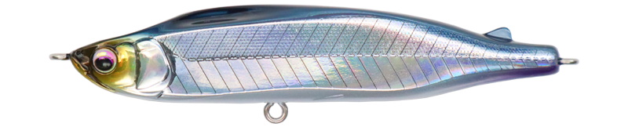
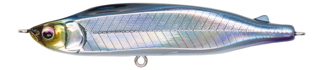
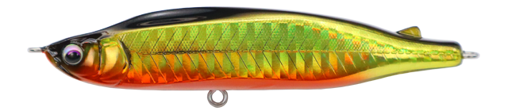
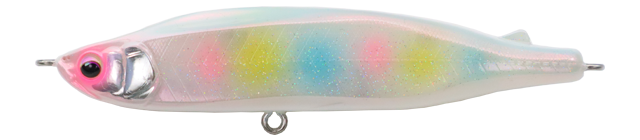
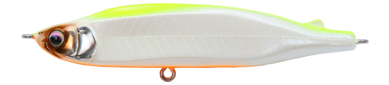
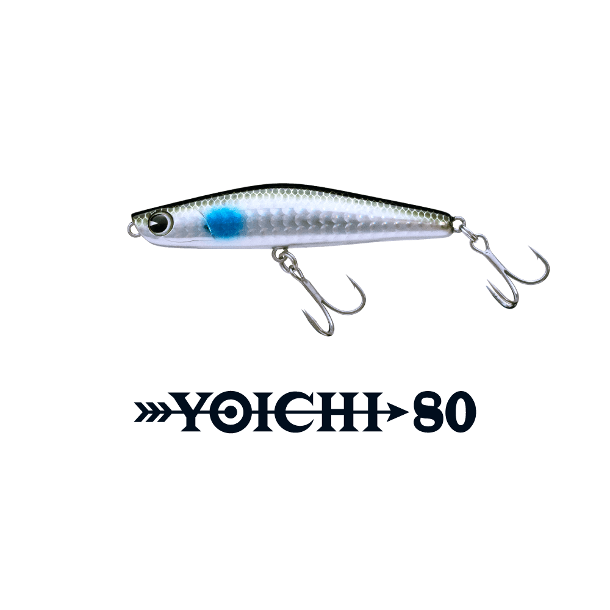

レイリア85SS
（rayrea 85SS）
レイリア85SS（rayrea 85SS）はhifumi creating（ヒフミクリエイティング）のシンキングペンシルです。
キャッチコピーは「Escape slalom!」。巻くスピードに合わせて、ワイドスラローム、スラローム、ウォブリングと動きが変わるのが最大の魅力です。

画像出典:hifumi creating公式HP
スペック
- メーカー
- hifumi creating（ヒフミクリエイティング）
- タイプ
- シンキングペンシル（スローシンキング）
- 全長
- 85mm
- 自重
- 12.3g
- レンジ
- 10〜70cm
- フック
- #8
- リング
- #3
- ターゲット
- シーバス
- 価格
- 2,640円（税込）
▼今すぐチェック
レイリア85SSの特徴
全スピードレンジで動きが変わる、キレのあるABSレイリア
-
スピードで変わるアクション
スローではワイドスラローム、ミディアムではスラローム、ファーストではウォブリングと動きが変わり、全スピードレンジに追従する。
-
不規則な動きを生むスプーンヘッド
イレギュラーの基点になるスプーンヘッドデザインに、エッジと面を際立たせたボディを組み合わせた。高いフラッシングと、手元に伝わる明確なアクションが出る。
-
飛行姿勢が安定する重心移動
スポット式マグネット重心移動で飛行姿勢が安定する。カウントダウンやフォールアピールにも使えるスローシンキング設定だ。
レイリア85SSの使い方
キャスト後にカウントダウンして、まずはスローに巻いてワイドスラロームを見せましょう。
反応がなければ巻きスピードを上げてアクションを変え、その日に合う速さを探ると組み立てやすくなります。ロッドワークにも反応するので、トゥイッチで誘いを変えるのも有効です。
レイリア85SSの得意な状況
ベイトがパニックになっている時や、迷っているベイトを演出したい場面が出番です。
表層を中心に巻けるほか、ベイトタックルとの相性も良いサイズです。
スピードで動きを変えられるので、同じコースでも見せ方を変えて釣れるチャンスを作れます。
ワンポイント
手元に明確なアクションが伝わるので、伝わる感触が変わった場所を意識して探ると、流れの変化を見つけやすくなります。向かい風や強い流れでも、ラインスラックを回収しやすいのも強みです。
レイリアのサイズの使い分け
| モデル | 全長／自重 | 特徴 |
|---|---|---|
| 85SS | 85mm／12.3g | レンジ10〜70cm。表層中心、ベイトタックルとの相性も良い（本記事のモデル） |
| 70SS | 70mm／7.2g | レンジ10〜60cm。コンパクトなシルエットで小さいベイトに |
どちらもABSモデルで、価格は2,640円（税込）です。ほかにウッド製のレイリアもあります。
人気カラー
レイリア85SSは全5色展開。人気カラーを紹介します。

ホロベイトフラッシングで見せるホログラムカラー。ベイトを意識した場面に。

キンクロ金と黒の組み合わせ。濁りや光量の少ない時間に。

キャンディパールパール系のアピールカラー。ナイトゲームのシルエット出しに。

チャートバックパール背中のチャートで見やすく、濁りでも使いやすいカラー。
画像出典:hifumi creating公式HP
▼今すぐチェック
レイリア85SSに似ているルアー
-

ヨイチ80 ima 詳細はこちら＞全長80mm・自重18gのシンキングペンシル。近いサイズで重さがあり、レンジ20〜60cmを狙いたい時に。
-
 モアザン スイッチヒッター85S
ダイワ
詳細はこちら＞
モアザン スイッチヒッター85S
ダイワ
詳細はこちら＞
全長85mm・自重20gのシンキングペンシル。同じ85mmで、より重さがあるので遠投したい時の候補に。
-
 スネコン90S
ブルーブルー
詳細はこちら＞
スネコン90S
ブルーブルー
詳細はこちら＞
全長90mm・自重15gのシンキングペンシル。近いサイズで、S字の動きで誘いたい時に。